Section 1: Introduction
Poisonous and irritant plants are a serious and pervasive concern throughout Ontario, particularly for those whose livelihoods rely on the outdoors. Lawn care technicians, landscaping crews, property owners, and outdoor workers encounter these hazards daily.
Exposure commonly occurs during routine outdoor work—mowing overgrowth, trimming brush along ditches, or clearing fence lines. Often, workers are exposed without realizing it, as plant oils can easily transfer from leaves to tools, gloves, clothing, and finally to the skin. According to Health Canada and the Canadian Dermatology Association, proactive identification is the most effective safety measure.
Types of Reactions
- Allergic Contact Dermatitis: A delayed immune response to plant oils like urushiol (found in Poison Ivy/Oak/Sumac), causing severe itching and blistering. This requires sensitization; prior exposure makes future reactions more likely and severe.
- Phototoxic Reactions (Phytophotodermatitis): Caused by sap from plants like Giant Hogweed or Wild Parsnip reacting with ultraviolet (UV) light on the skin. It leads to severe burns and long-term hyperpigmentation.
- Irritant Reactions: Immediate physical or chemical irritation, such as the histamine and formic acid injected by the stinging hairs of Stinging Nettle.
- Secondary Infections: Bacterial infections (like Staphylococcus aureus) resulting from scratched and open blisters, which can complicate healing.
Section 2: Ontario Poisonous Plant Identification Guide
Learn to identify common hazardous plants in the Ottawa Valley, Kemptville, and surrounding rural areas. For quick visual lookups, see Appendix A.
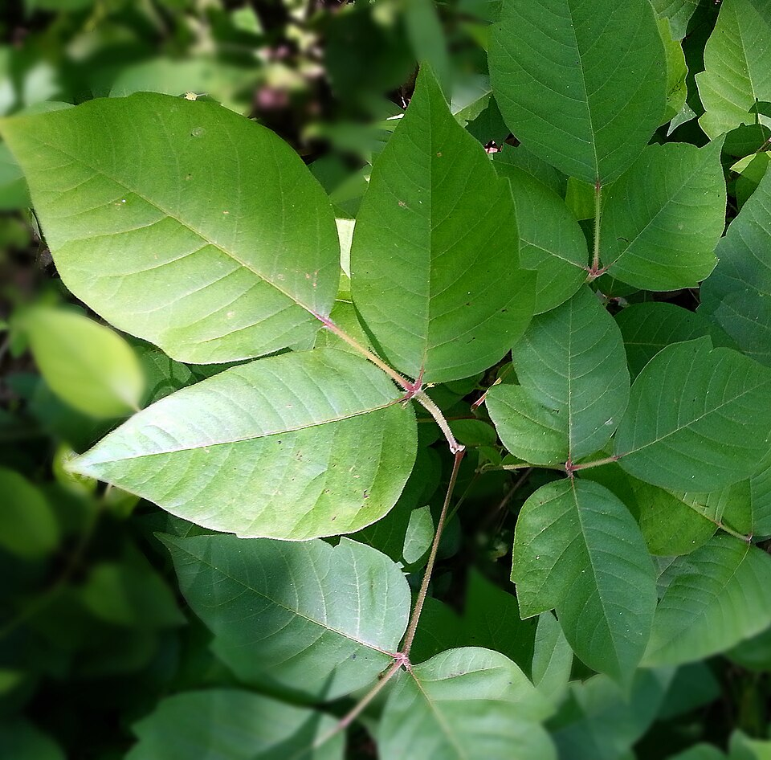
Poison Ivy
High Risk - Urushiol OilFeatures: "Leaves of three, let it be." Almond-shaped leaves, smooth or toothed edges. Can grow as a ground cover, trailing vine, or small shrub.
Growth Stages: Reddish leaves in early spring, shiny green in summer, brilliant red/orange in fall. Bare vines in winter still contain active oils.
Habitat: Wooded lots, overgrown lawns, fence lines, and trails.
Worker Risk: Trimming perimeters or hand-pulling weeds. Oils transfer to trimmers and mower decks easily.
Look-alikes: Manitoba Maple seedlings (opposite leaves), Virginia Creeper (five leaves), Raspberry bushes (has thorns).
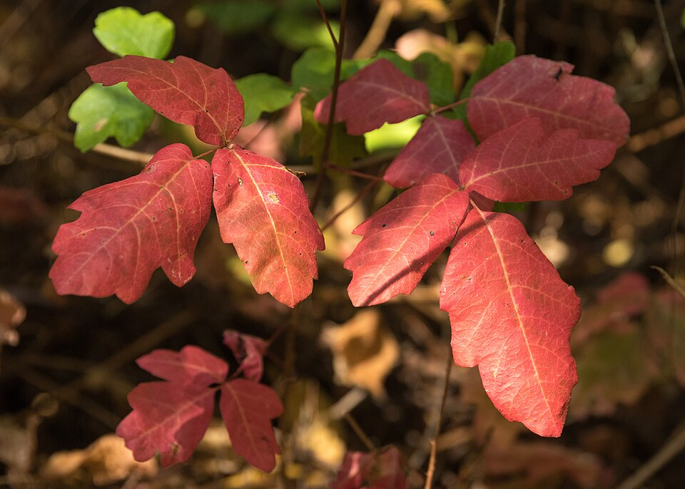
Poison Oak
High Risk - Urushiol OilFeatures: Leaves resemble oak tree leaves but grow in clusters of three. May have a fuzzy texture and lobed margins.
Habitat: Sandy soils, rural properties, forest edges.
Worker Risk: Clearing brush and undergrowth. Highly toxic oils.
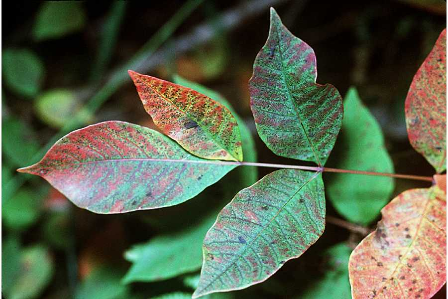
Poison Sumac
High Risk - Urushiol OilFeatures: 7-13 leaflets per stem, smooth edges. Red stems, white/greenish berries.
Habitat: Wetlands, swamps, and riverbanks.
Look-alikes: Staghorn Sumac (harmless, has jagged edges on leaves and fuzzy red berry clusters).

Wild Parsnip
High Risk - Phototoxic SapFeatures: Yellow, umbrella-shaped flower clusters. Stem is hollow, grooved, and stands 2-5 feet tall.
Growth Stages: Rosette of leaves in year one. Tall flowering stalk in year two (June-August).
Habitat: Ditches, roadsides, open fields.
Worker Risk: Line-trimming ditches. Splattering sap causes severe burns when exposed to sunlight.
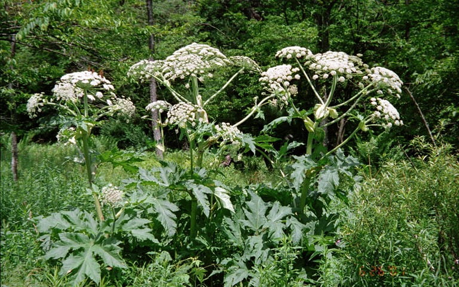
Giant Hogweed
Extreme Risk - PhototoxicFeatures: Massive size (up to 15+ feet). Huge white umbrella flower clusters. Stem has purple spots and coarse bristly hairs.
Habitat: Riverbanks, rich damp soils, uncontrolled overgrowth.
Worker Risk: Contact can cause permanent scarring or blindness if sap enters eyes. Requires professional abatement.
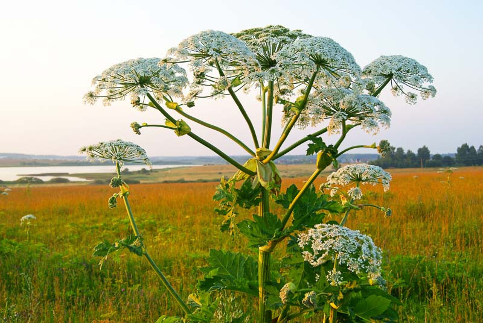
Cow Parsnip
Moderate Risk - PhototoxicFeatures: Resembles Giant Hogweed but smaller (4-8 feet). Large leaves, white flowers. Stem is deeply ridged, green, and lacks extensive purple spotting.
Habitat: Woodlands, shorelines, damp areas.
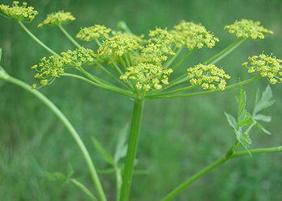
Queen Anne's Lace / Wild Carrot
Low/Moderate Risk - PhototoxicFeatures: LACY, flat-topped white flower clusters. Small, hairy stem. Distinct carrot smell when crushed.
Habitat: Fields, roadsides, dry soils.
Worker Risk: Sap can cause mild to moderate phytophotodermatitis in sensitive individuals. Commonly encountered during field mowing.
Look-alikes: Poison Hemlock (deadly to ingest, purple spots on smooth stem), Wild Parsnip (yellow flowers).
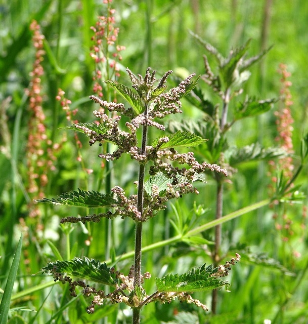
Stinging Nettle
Moderate Risk - Immediate StingFeatures: Toothed, heart-shaped leaves covered in fine stinging hairs (trichomes) acting like hypodermic needles.
Habitat: Damp soils, edge of woods, disturbed ground.
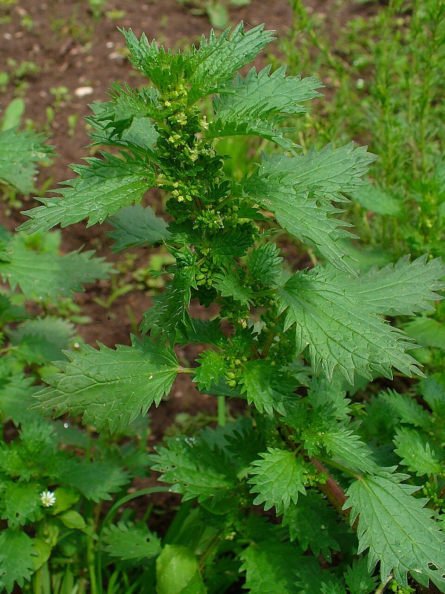
Burning Nettle
Moderate Risk - Immediate StingFeatures: Smaller than stinging nettle (under 2 feet), deeply toothed leaves. Annual weed with intense sting.
Habitat: Gardens, agricultural fields, bare soil.
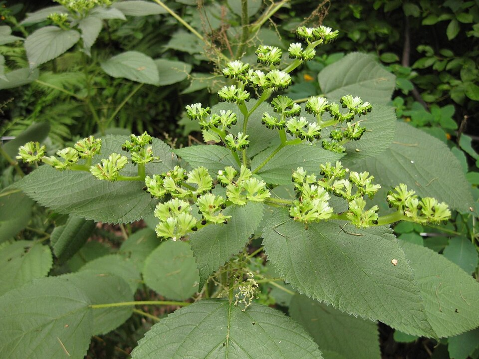
Wood Nettle
Moderate Risk - Immediate StingFeatures: Broad, alternate leaves (stinging nettle has opposite leaves). Sting can be more potent than standard nettles.
Habitat: Moist, dense woodlands and shaded ravines.
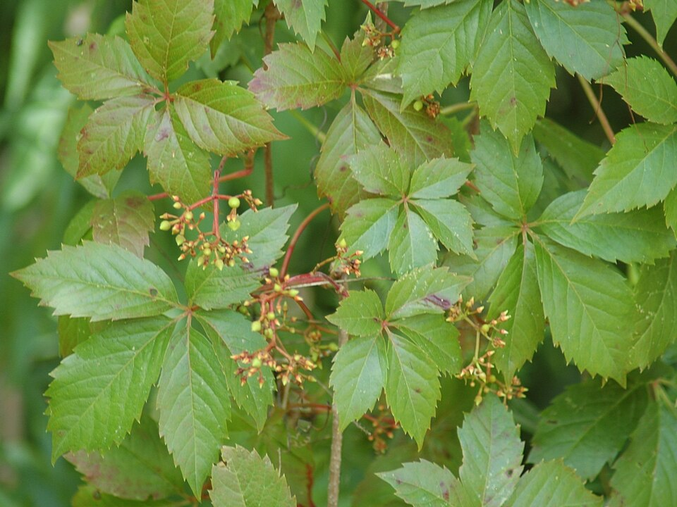
Virginia Creeper
Low/Moderate RiskFeatures: Five leaflets joined at a central point. Climbing vine with blue/black berries.
Worker Risk: Sap contains oxalate crystals which can irritate sensitive skin if crushed.
Section 3: Rash & Skin Reaction Guide
Different plants cause vastly different symptoms. It is critical to recognize the progression and severity of skin reactions to determine the right treatment path.
| Reaction Type | Onset Timeline | Duration | Primary Symptoms | Causative Plants | Exacerbating Factors |
|---|---|---|---|---|---|
| Allergic Contact Dermatitis | 24 - 72 hours post-exposure | 2 to 4 weeks | Intense itching, red streaks, swelling, weeping blisters. | Poison Ivy, Oak, Sumac | Heat, hot showers, sweating, repeated scratching (causes secondary infection). |
| Phototoxic Reaction | 24 - 48 hours after sun exposure | Weeks for burns; Months/Years for scars | Severe sunburn-like pain, large blisters, long-lasting dark pigmentation. | Giant Hogweed, Wild Parsnip, Cow Parsnip, Queen Anne's Lace | Intense sunlight/UV exposure immediately after contact. |
| Immediate Irritant | Seconds to minutes | 2 to 12 hours | Sharp sting, burning sensation, localized hives or welts. | Nettles (Stinging, Wood, Burning) | Friction, tight clothing rubbing the affected area. |
Section 4: Rash Case Studies
The following case studies display actual rash presentations from lawn care workers in the field, utilizing their own documented photographs. Note: These are for educational and training purposes. We provide conservative evaluations of visible findings; only a medical professional can provide a definitive diagnosis.
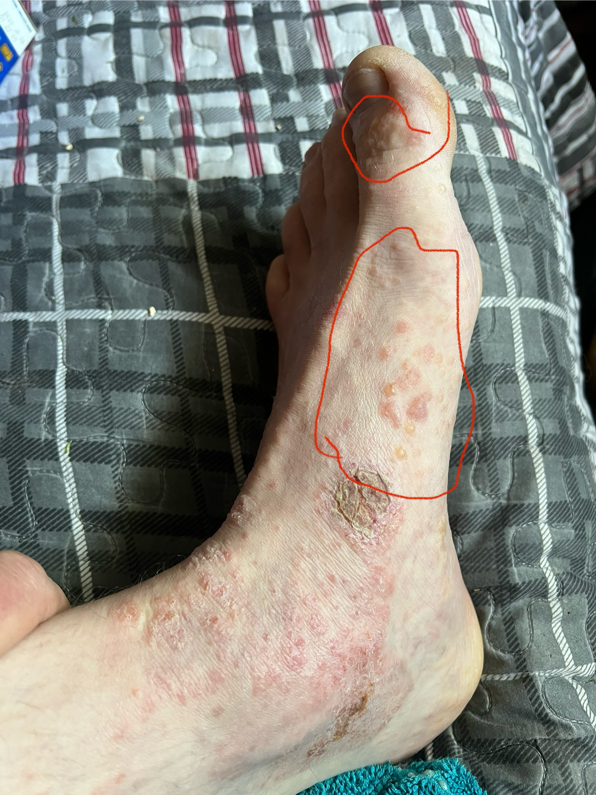
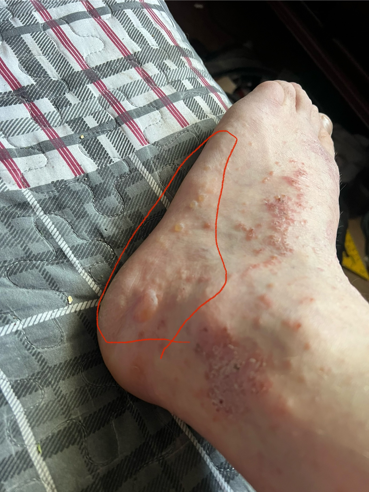
Case 1: Left Foot Urushiol Exposure (Inside & Outside)
Scenario: A lawn care technician wore low-cut leather work boots with porous ankle gaps during a string-trimming shift on an overgrown ditch line. Mulched Poison Ivy debris flew up under the pant cuffs and entered the boot.
Explanation: Urushiol oils transferred to the ankle area and inside the boot. Over the shift, friction and heavy sweat worked the oils directly into the skin along the inside and outside of the ankle and heel. This demonstrates the critical importance of keeping pants tucked into boots or using high-top boots with tight seals.
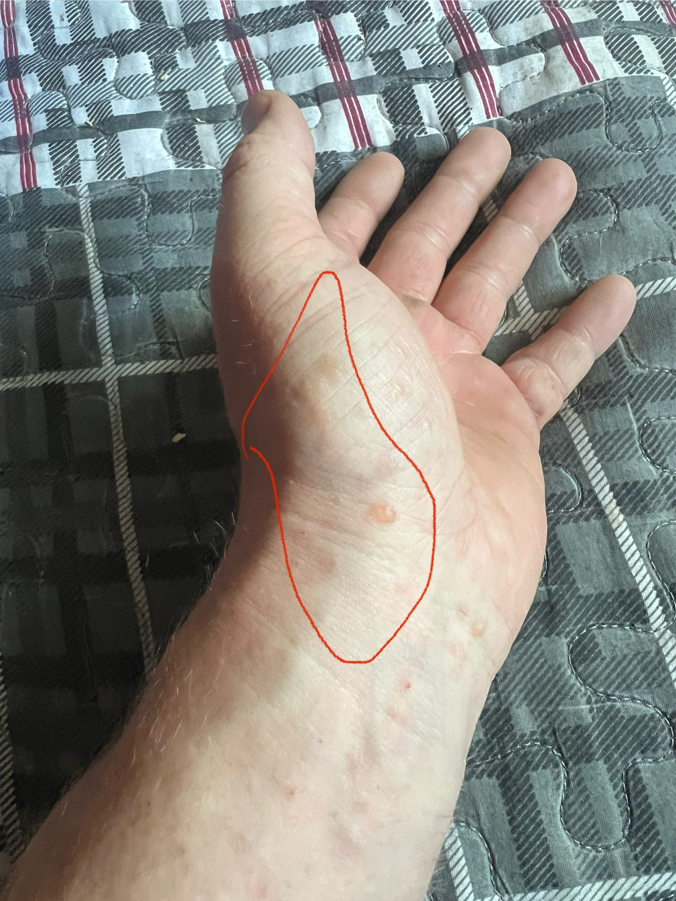
Case 2: Left Hand Contact Dermatitis
Scenario: A landscaper hand-pulled weeds under a deck without realizing Poison Ivy vines were mixed in. The worker took off their gloves incorrectly, touching the contaminated exterior glove with their bare left hand.
Explanation: This is a classic "indirect transfer" rash. The linear patterns and highly concentrated vesicular blisters on the hand and fingers match direct skin contact with highly potent urushiol residue from the glove's surface.
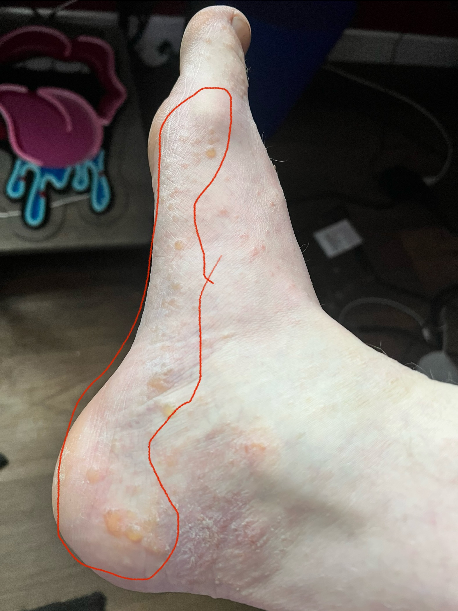
Case 3: Right Foot Ankle Line Reaction
Scenario: Symmetrical exposure on the opposite ankle of a field technician wearing short athletic socks and breathable mesh running shoes while clearing brush.
Explanation: Breathable mesh shoe panels easily absorb atomized plant saps and oils. The concentrated red streaking and localized swelling along the boot line show how the sock absorbed and trapped the urushiol, creating a prolonged exposure zone.
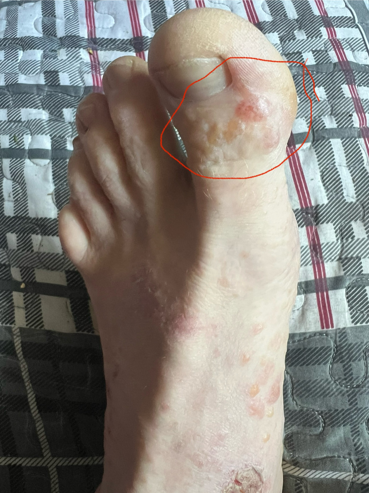
Case 4: Toe Blistering & Deep Tissue Pressure
Scenario: Severe blistering on the toes of a worker after clearing heavy vegetation in wet conditions. Oils penetrated through the toe box of the shoe and saturated the toe area of the sock.
Explanation: Heavy friction and trapped moisture in the toe area caused deep, tight, and highly painful blisters to form on the toes. This illustrates an ideal candidate for the professional blister drainage protocol to relieve intolerable pressure when blisters are likely to pop under footwear pressure anyway.
Section 5: Treatment & First Aid
Effective treatment begins with immediate decontamination. If symptoms develop, conservative home care can manage mild reactions, but severe cases require medical intervention.
Step-by-Step Immediate Decontamination
- Stop Work: Immediately leave the area if exposure is suspected.
- Wash with Friction: Within 15-30 minutes, wash skin vigorously with cold water and grease-cutting soap (e.g., Dawn Dish Soap) or specialized washes (Tecnu, Zanfel). Cold water keeps pores closed.
- Decontaminate Gear: Bag contaminated clothing immediately. Wash clothes in hot water with strong detergent separately from other laundry. Wipe down steering wheels, trimmers, tool handles, and boots with rubbing alcohol or degreaser.
Over-the-Counter (OTC) Products in Canada
- For Washing: Dawn Dish Soap, Tecnu Outdoor Skin Cleanser.
- For Itch Relief: Calamine lotion, Polysporin Itch Relief (contains 1% hydrocortisone), Benadryl (diphenhydramine) oral tablets for nighttime itch.
- Natural/Alternative Remedies: Colloidal oatmeal baths (Aveeno) are highly proven to soothe widespread rashes. Aloe vera provides cooling relief but does not stop the allergic cascade.
Medical Care & What NOT to Do
- Blister Care: Generally, you should NOT pop blisters, as the skin covering the blister acts as a sterile bandage protecting against bacterial infection. However, if a blister is extremely tight, painful, and likely to pop on its own, it can be drained safely to relieve pressure:
- Wash your hands and the blister area thoroughly with soap and water.
- Sterilize a needle or pin with rubbing alcohol.
- Gently pierce the edge of the blister to allow the fluid to drain out.
- Crucial: Leave the overlying blister skin in place to protect the raw skin underneath—do not peel it off.
- Apply a loose, sterile bandage to keep it clean.
- Avoid hot showers during the acute itching phase, as heat causes severe histamine release, making the itch unbearable.
Oral Steroids vs. Topical Steroids
- Topical (OTC 1% Hydrocortisone): Best for very mild, localized patches of poison ivy.
- Oral Steroids (Prescription Prednisone): Required for severe, widespread rashes, or rashes involving the face, eyes, or genitals. Must be prescribed by a physician.
Section 6: When to See a Doctor
Seek medical attention immediately if you experience any of the following:
- Severe swelling, especially of the face, eyes, lips, or throat.
- Breathing difficulty or signs of anaphylaxis (requires Emergency Room).
- Signs of infection: fever, yellow/green pus, yellow crusting, or rapidly spreading redness/warmth.
- Inability to walk or perform daily tasks due to severe pain or swelling.
- Rash covers more than 20-25% of the body.
- Extreme blistering that impairs vision or mobility.
Section 7: Ottawa & Kemptville Medical Resources
Always call ahead to confirm operating hours and walk-in availability.
| Facility Type | Name & Address | Contact Info | Typical Services |
|---|---|---|---|
| Hospital (ER) | Kemptville District Hospital 2675 Concession Rd, Kemptville, ON |
(613) 258-6133 | 24/7 Emergency Room. Best for severe allergic reactions or facial swelling. |
| Hospital (ER) | Ottawa Hospital (Civic Campus) 1053 Carling Ave, Ottawa, ON |
(613) 761-4000 | 24/7 Emergency Room. Level 1 Trauma Center. |
| Urgent Care | Orleans Urgent Care Clinic 1220 Place d'Orléans Dr, Orléans, ON |
(613) 841-5389 | Non-life-threatening urgent issues. Open weekends. |
| Walk-In Clinic | Appletree Medical Group (Various Ottawa Locations) | (613) 482-0118 | Walk-in and appointment-based care for mild/moderate rashes. |
| Telehealth | Health811 (Formerly Telehealth Ontario) | Dial: 811 | Free 24/7 secure medical advice from a registered nurse. |
Section 8: Common Myths & Misconceptions
Myth: Blister fluid spreads poison ivy.
Fact: Blister fluid is body fluid. Only the plant oil (urushiol) spreads the rash.
Myth: Dead poison ivy is harmless.
Fact: Urushiol remains active on dead plants and vines for up to 5 years.
Myth: Burning poison ivy is safe.
Fact: Burning releases urushiol into smoke, which can cause fatal respiratory damage.
Myth: Wild parsnip reacts immediately.
Fact: Wild parsnip requires UV sunlight to react. Burns appear 24-48 hours later.
Myth: If you didn't react once, you never will.
Fact: Urushiol allergy builds up over time. Repeated exposures increase severity.
Section 9: Prevention & Outdoor Worker Safety
Prevention is the most reliable strategy. Augusta Lawn Care mandates the following protocols:
Jobsite Awareness & Checklists
- Pre-Work Inspection: Crew leaders must walk the perimeter, ditches, and fence lines before unloading mowers.
- Identify & Flag: Mark large patches of Wild Parsnip or Giant Hogweed with high-visibility spray or flagging tape.
- Handling Brush: Do NOT use string trimmers on suspected Wild Parsnip, Giant Hogweed, or Poison Ivy. Splattering toxic sap into the air exposes the operator's face and clothes. Cut with hand shears and bag carefully.
PPE Selection Guide
Standard uniform compliance is mandatory when hazards are present:
- Pants: Long, durable work pants (denim or heavy canvas). No shorts when trimming.
- Sleeves: Long-sleeved breathable work shirts.
- Footwear: Minimum 6-inch leather or rubber work boots. Avoid mesh running shoes which absorb oils.
- Gloves: Nitrile-dipped work gloves or heavy leather gloves. Dispose of cheap cotton gloves if exposed to urushiol.
- Eye Protection: ANSI Z87.1 rated safety glasses are mandatory during trimming to prevent sap splatter into the eyes.
Hidden Exposures & Oil Transfer Mechanics
- The "Sweaty Sock" Edge Case: When using a line trimmer or mower, mulched plant matter (especially poison ivy) can easily fly up and find its way into the gap between your pants and boots. Over a long, hot shift, sweat can dissolve the urushiol oil and work it directly through the fabric of your sock, resulting in severe, blistering ankle rashes. Prevention: Always tuck your pants into your boots or wear high-quality tall socks that overlap your pant cuffs. Consider gaiters for heavy brush clearing, and wash your boots and laces regularly with a degreaser.
- Tool-to-Person Transfer: Urushiol oil is extremely resilient and can remain active on surfaces for years. If a worker handles a contaminated plant and then grips a shovel, rake, or trimmer handle, the oil deposits there. If another worker later uses that same tool without gloves, they will be exposed. Prevention: Always wear gloves, and vigorously wipe down shared tool handles and mower decks with rubbing alcohol or a degreaser at the end of the shift.
- Clothing & Vehicle Transfer: Oils that soak into your work pants or shirt will easily transfer to the seats of the work truck, your personal vehicle, or your living room furniture. Anyone who sits there later—or whoever handles the contaminated laundry—can break out in a rash. Prevention: Change out of contaminated work clothes before getting into vehicles if possible, use washable seat covers, and always wash work clothes in hot water separately from family laundry.
Seasonal Risk Calendar (Eastern Ontario)
- Spring (April-May): Poison Ivy begins leafing out. Wild Parsnip rosettes form. High risk of hand exposure during spring cleanups.
- Summer (June-August): Wild Parsnip and Hogweed are blooming and highly phototoxic. Maximum UV exposure exacerbates burns.
- Fall (Sept-Oct): Poison Ivy turns red. Vines are highly visible but oils are at peak concentration.
- Winter (Nov-March): Dormant, leafless Poison Ivy vines on firewood or fence lines still contain potent urushiol.
Section 10: Risk Assessment Matrix
This matrix helps crew leaders evaluate jobsite risks before deploying workers. It categorizes hazards based on the likelihood of exposure and the consequence of the plant type.
| Exposure Probability & Activity | Low Consequence (Immediate Irritant) | Medium Consequence (Urushiol Allergen) | High Consequence (Severe Phototoxic) |
|---|---|---|---|
| High Likelihood (Line trimming ditches, heavy brush clearing, overgrown fence lines) |
Nettles (Stinging, Wood, Burning) Action: Wear long sleeves and gloves. Symptoms manage locally but cause severe immediate discomfort, slowing down work significantly. |
Poison Ivy, Poison Oak, Poison Sumac Action: High risk of splattering oils or "sweaty sock" transfer. Mandatory full PPE (long pants tucked into boots, long sleeves, nitrile gloves). Post-shift decontamination required. |
Giant Hogweed, Wild Parsnip Action: STOP WORK. Do NOT use string trimmers. High risk of severe facial and eye burns. Abate manually with shears, full Tyvek suits, and face shields. |
| Medium Likelihood (Hand-pulling garden beds, pruning shrubs, picking up yard waste) |
Virginia Creeper Action: Sap can cause mild irritation if vines are crushed. Wear standard gloves. |
Poison Ivy Vines Action: High risk of hand/wrist exposure. Ensure gloves are fully extended and no skin gap exists between cuff and sleeve. Remove gloves carefully. |
Cow Parsnip, Queen Anne's Lace Action: Moderate risk of sap transfer to hands. Wash hands immediately before taking lunch or using the washroom. Keep skin out of direct UV sunlight. |
| Low Likelihood (Mowing open, maintained turf, blowing hardscapes) |
Minimal Risk Standard PPE applies. |
Hidden Vines Action: Beware of dormant vines on fences or trees being damaged by mower decks. Mower wheels can pick up oils. |
Minimal Risk Avoid mowing directly over large flowering rosettes without a discharge chute deflector. |
Section 11: Frequently Asked Questions (FAQ)
- Q: Can I build an immunity to Poison Ivy?
A: No. In fact, the opposite is true. Continued exposure typically sensitizes the immune system, making subsequent reactions faster and more severe. - Q: Does washing my clothes in regular detergent remove the plant oils?
A: Yes, standard laundry detergent and hot water will break down urushiol and plant saps. Always wash heavily contaminated work clothes separate from family laundry. - Q: Are dogs affected by Poison Ivy?
A: Dogs rarely get rashes because their fur protects their skin. However, they act as carriers, rubbing urushiol oils onto their owners when petted. - Q: What do I do if I get Giant Hogweed sap on me?
A: Wash the area immediately with soap and water, keep the area completely covered from sunlight for at least 48 hours, and seek medical evaluation.
Section 12: Mobile Plant Identification Apps
In modern lawn care and landscaping, immediate and accurate field identification is crucial. Using AI-powered plant identification apps allows crews to instantly analyze leaves, flowers, or berries from a smartphone before beginning work on a jobsite.
| App Name | Developer & Access | Offline Capability | Key Advantages for Crews |
|---|---|---|---|
| Seek by iNaturalist | iNaturalist (National Geographic & Cal Academy of Sciences) - Free | Excellent (Uses local, on-device neural networks; no internet or login required) | Perfect for remote Ontario areas. Operates live through the camera viewfinder. Highly safe, respects privacy, and does not collect coordinates by default. |
| PictureThis | Glority LLC - Free tier & Premium subscription | Limited (Requires active cell service/internet to query cloud AI database) | Extremely high identification accuracy. Provides immediate toxicity warnings for humans and pets, which is highly useful when deciding how to safely handle a plant. |
| Pl@ntNet | Citizen Science Consortium (Inria, INRAE, CIRAD, IRD) - Free | None (Requires active internet connection) | Compares photos directly to extensive scientific global databases. Excellent for differentiating difficult look-alikes like Wild Parsnip vs. Queen Anne's Lace. |
| Google Lens | Google - Free (Built into Android / Google App on iOS) | None (Requires internet) | Extremely fast and already pre-installed on most crew phones. Excellent for broad identification, though less specialized for detailed botanical look-alikes. |
- The 100% Certainty Rule: Apps can make mistakes or struggle with adolescent plants and bare winter vines. If an app reports an identification confidence score of less than 90%, or suggests any toxic look-alike, treat the plant as high-risk and wear full PPE.
- Keep a Safe Distance: Never touch or approach high-risk plants (especially Giant Hogweed) just to get a closer photo. Use your phone's optical zoom to capture clear images of leaves, stems, and branching patterns from a safe distance.
- Capture Multiple Features: For the most accurate AI analysis, take photos of multiple plant parts: the leaf shape, the stem (checking for purple mottling or hairs), and the flowering head.
Section 13: Augusta Lawn Care Safety Commitment
At Augusta Lawn Care, the safety of our team and our customers is our primary concern. We mandate rigorous plant awareness training for all crews. We practice responsible landscaping by educating property owners on environmental risks and utilizing safe, targeted removal techniques. By prioritizing safety, knowledge, and proactive communication, we deliver a premium, professional landscaping experience across Ontario.
Appendix A: Plant Quick Reference Index
A fast, visual lookup tool for field workers. Click the links for full details.
Appendix B: Emergency Response Quick Reference
- 1. URUSHIOL EXPOSURE (Poison Ivy / Oak / Sumac)
- Immediate: Wash skin within 15-30 mins with cold water and Dawn dish soap.
- Action: Wipe down steering wheel, door handles, and tools. - 2. PHOTOTOXIC EXPOSURE (Wild Parsnip / Giant Hogweed)
- Immediate: Wash sap off skin immediately.
- Action: COVER SKIN FROM SUNLIGHT IMMEDIATELY. UV light activates the severe burning reaction. - 3. EYE EXPOSURE (Sap Splatter)
- Immediate: Flush eyes continuously with water for 15-20 minutes.
- Action: Protect eyes from sunlight. Go to Urgent Care or ER immediately. - 4. SEVERE ALLERGIC REACTION
- Symptoms: Swelling of face/lips/throat, difficulty breathing.
- Action: CALL 911 immediately.
Appendix C: Reference Library & External Resources
-
Medical Resources
Health Canada: Poison Ivy Guidance
Canadian Dermatology Association: Contact Dermatitis Information
Ontario Poison Centre: 1-800-268-9017 | ontariopoisoncentre.ca
-
Ontario Government Resources
Ontario Ministry of Agriculture, Food and Rural Affairs (OMAFRA): Weed Identification Guide
Ontario Invading Species Awareness Program: invadingspecies.com
-
Outdoor Worker Safety
Workplace Safety & Prevention Services (WSPS): Landscaping Safety Resources